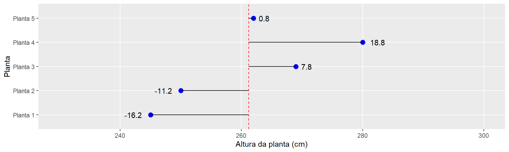
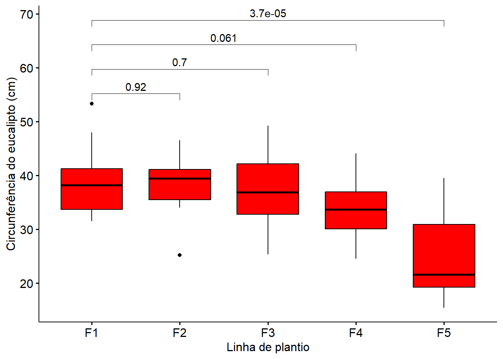
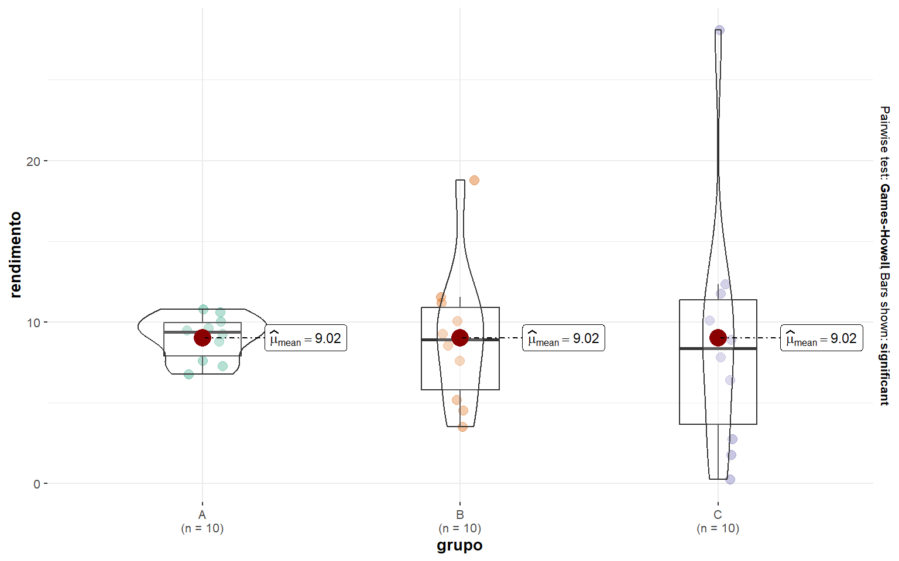

library(tidyverse)
library(metan) 1. Estatística Descritiva
Pacotes
Introdução
A estatística descritiva é um ramo da estatística que aplica várias técnicas para descrever e sumarizar um conjunto de dados1. Nesse material trataremos das medidas de posição e medidas de dispersão mais utilizadas para descrever um conjunto de dados (ou grupos de dados).
Medidas de posição
As medidas de posição (também conhecidas como medidas de tendência central) indicam um valor que melhor representa todo o conjunto de dados, ou seja, dão a tendência da concentração dos valores observados. É necessário, no entanto, cautela na interpretação de medidas de posição utilizadas de forma isolada, pois elas não nos dão a ideia da dispersão dos dados. As principais medidas de posição são: a média, a mediana e a moda.
Média
Média aritmética
Seja uma amostra \(X_1\), \(X_2\), \(X_n\), de uma população \(X_1\), \(X_2\), \(X_N\) de tamanho \(n\) e \(N\), definimos a média aritmética por
\[ \mu = \frac{\displaystyle\sum_{i=1}^{N}X_i}{N}, \quad \textrm{(População)} \]
\[ \bar{X} = \frac{\displaystyle\sum_{i=1}^{n}X_i}{n}. \quad \textrm{(Amostra)} \]
Considere a altura (em cm) de cinco plantas de milho, armazenada no objeto altura. Para calcular a média aritmética destas alturas, utilziamos a função mean().
altura <- c(245, 250, 269, 280, 262)
mean(altura)[1] 261.2Média geométrica
A média geométrica (\(m_g\)) entre um conjunto de n dados é a n-ésima raíz do produto desses dados.
\[ m_g = \sqrt[n]{\prod\limits_{i = 1}^n {{x_i}} } \]
Média harmônica
A média harmônica (\(m_h\)) é definida como sendo o inverso da média aritmética dos inversos, representada como segue
\[ m_h = \frac{n}{{\sum\limits_{i = 1}^n {\frac{1}{{{x_i}}}} }} \]
A escolha pelo uso da média harmônica para representação da média de um conjunto está ligada a situações que envolvem grandezas inversamente proporcionais, por exemplo a velocidade média.
Exemplo de aplicação
Um carro percorre um percurso de mesma distância duas vezes. No primeira, ele faz o percurso com uma velocidade V1 = 80 km/h. No segunda, ele realiza o mesmo percurso com velocidade de V2 = 120 km/h. Pede-se: qual foi a velocidade média dos dois percursos?
Intuitivamente (e erroneamente) computaríamos a média aritmética (\((80 + 120) / 2 = 100\)). Note que a distância é a mesma, para os dois percursos, o que muda é a velocidade e, consequentemente, o tempo. A resolução correta do problema é a seguinte:
Sejam,
\(d\), a distância do percurso \(v_1\), a velocidade média do percurso \(t_i\), o tempo de viagem do percurso
Então, temos que \(d = v_1t_1=v_2t_2\). Se \(v\) é a velocidad média nos dois trajetos, então \(2d=v(t_1+t_2)\), ou \(2d=v(d/v_1+d/v_2)\). Moral da história: a velocidade média no percurso todo é a média harmônica das velocidades dos dois percursos:
\[ m_h = \frac{2}{{{\frac{1}{{{80}}} + \frac{1}{{{120}}}} }} = 96 \]
No R base, não existe uma função específica para a média harmônica. Pode-se utilizar, então, a função hmean() do pacote metan2.
library(metan)
hmean(c(80, 120))[1] 96Mediana
A mediana é calculada com a função median().
altura <- c(245, 250, 269, 280, 262)
# Média
(media <- mean(altura))[1] 261.2# Mediana
# Ordenar os dados
sort(altura)[1] 245 250 262 269 280# Calcular a mediana
(mediana <- median(altura))[1] 262Medidas de dispersão
Amplitude
A primeira medida de dispersão que definiremos é a amplitude ou amplitude total, denotada por \(A_p = X_{(max)} - X_{(min)}\), onde \(X_{(max)}\) e \(X_{(min)}\) são os valores máximos e mínimos do conjunto de dados, respectivamente. Os valores extremos podem ser encontrados com a função range().
(extremos <- range(altura))[1] 245 280(amplitude <- extremos[2] - extremos[1])[1] 35Desvios médios
Considerando uma amostra \(X_1\), \(X_2\), \(X_n\), de uma população \(X_1\), \(X_2\), \(X_N\) de tamanho \(n\) e \(N\), a soma dos desvios é dada por
\[ DM = \sum_{i = 1}^{n} \left(X_i - \bar{X} \right) \]
Para calcularmos os desvios, basta utilizar o operador - no R.
(desvios <- altura - media)[1] -16.2 -11.2 7.8 18.8 0.8Para expressar estes desvios, vamos construir um gráfico utilizando o pacote ggplot2.
df <- data.frame(pessoa = paste("Planta", 1:5),
altura = altura,
altura_media = media,
desvio = desvios)
ggplot(df, aes(x = altura, y = pessoa)) +
geom_point(color = "blue",
size = 3) +
geom_segment(aes(x = media,
xend = altura,
y = pessoa,
yend = pessoa)) +
geom_vline(xintercept = media, linetype = 2, color = "red") +
geom_text(aes(x = altura, y = pessoa, label = round(desvio, digits = 3),
hjust = ifelse(desvio < 0, 1.5, -0.5))) +
scale_x_continuous(limits = c(230, 300)) +
theme(panel.grid.minor = element_blank()) +
labs(x = "Altura da planta (cm)",
y = "Planta")
A expressão anterior resulta em
\[ DM = \sum_{i = 1}^{n} \left(X_i - \bar{X} \right) = 0 \]
sum(desvios) |> round()[1] 0Isso significa que essa medida não traz ganho algum a descrição dos dados, porque os desvios positivos anulam-se com os desvios negativos no somatório. Para isso, podemos contornar essa situação inserindo uma função modular nessa medida anterior, e criar o módulo do desvio. Assim, o desvio médio é dado por:
\[ S_{|\bar{X}|} = \frac{\sum_{i = 1}^{n} \left|X_i - \bar{X} \right|}{n} \]
# soma dos desvios em módulo
(somadesv <- desvios |> abs() |> sum())[1] 54.8# desvio médio
somadesv / 5[1] 10.96Variância
Utilizando uma função quadrática na medida surge uma outra medida de variabilidade que é a soma de quadrados. A soma de quadrados apresenta uma outra informação interessante que é penalizar as observações quanto mais estiver distante do valor central. Assim, quando elevamos ao quadrado um alto desvio, esse valor se torna maior ainda, mas quando elevamos ao quadrado um desvio pequeno, esse valor não cresce tanto. Com isso, conseguimos compreender quais os dados que estão mais dispersos em torno da média. Ao dividir a soma de quadrados por \(n-1\) temos o estimador da variância amostral (\(S^2\)), dado por:
\[ S^2 = \frac{\sum_{i = 1}^{n} \left(X_i - \bar X_i \right)^2}{n-1} \]
# Desvios ao quadrado
(desvq <- desvios ^ 2)[1] 262.44 125.44 60.84 353.44 0.64# soma dos desvios ao quadrado
(somadesvq <- sum(desvq))[1] 802.8# divisão por n - 1
(var_altura <- somadesvq / 4)[1] 200.7Anteriormente, vimos o passo a passo para o cálculo da variância amostral. No R, a função var() pode ser utilizada para este fim.
var(altura)[1] 200.7Desvio padrão
A variância, como medida de dispersão, apresenta sua unidade ao quadrado da unidade da variável em estudo. Em outras palavras, que se tivermos usando uma variável na escala de centímetros (ex., algura), a dispersão dada pela variância estará na escala de área (cm\(^2\)). Isso se torna difícil a percepção de dispersão quando observamos os dados. Para contornar isso, utilizamos o desvio padrão, que é a raíz quadrada da variância, dado por
\[ S = \sqrt{S^2} \]
Para o exemplo acima, computamos o desvio padrão extraíndo a raíz de var_altura, ou, como para a variância, utilizando uma função específica do R para isso: sd() (de standard deviation).
(desv_altura <- sqrt(var_altura))[1] 14.16686# utilizando a função sd()
sd(altura)[1] 14.16686Coeficiente de variação
As medidas de variabilidade tais como a variância e desvio padrão, são conhecidas como medidas de dispersão absoluta. Isto significa que elas serão diretamente influenciadas pela magnitude da variável. Vamos tomar como motivação, os valores em altura, tomados em cm. Consideremos que estes dados são transformados para metros, por tanto, cada observação será dividida por 100. Observe abaixo o resultado do desvio padrão da mesma variável, mas com escala diferente.
(altura_m <- altura / 100)[1] 2.45 2.50 2.69 2.80 2.62(desv_altura_m <- sd(altura_m))[1] 0.1416686Para contornar este problema, podemos utilizar uma medida relativa de variabilidade chamada de Coeficiente de Variação (CV). Este pode ser usada para comparar a variabilidade entre quaisquer grupo de dados, independentemente da sua escala. O coeficiente de variação é definido por:
\[ CV = \frac{S}{\bar{X}} \times 100 \]
# coeficiente de variação da variável em centímetros
(cv_altura <- desv_altura / media * 100)[1] 5.423761# coeficiente de variação da variável em metros
(cv_altura2 <- desv_altura_m / mean(altura_m) * 100)[1] 5.423761Não existe no R base uma função para computar o coeficiente de variação, então vamos criá-la utilizando a abordagem function().
CV <- function(dados){
if(!class(dados) == "numeric"){
stop("Os dados precisam ser numéricos")
} #Indica que os dados devem ser numéricos
media <- mean(dados)
sd <- sd(dados)
CV <- (sd/media) * 100
return(CV) # Valor que será retornado pela função
}
CV(altura)[1] 5.423761Erro padrão da média
O erro padrão da média é a estimativa do desvio padrão de sua distribuição amostral. O desvio padrão visto anteriormente reflete a variabilidade de cada observação em torno da média amostral. Já o erro padrão da média, representa a variabilidade de cada média amostral de todas amostra possíveis, em relação a média populacional. Sua estimativa é dada por:
\[ S_{\bar{X}} = \frac{S}{\sqrt{n}} \]
É fácil observar que à medida que \(n \to N\), isto é, à medida que
\(n\) aumenta, a média amostral (\(\bar X\)) tende a média populacional (\(\mu\)). Isso significa que a média amostral é mais precisa porque se aproxima cada vez mais da média populacional. Para os dados em altura, o erro padrão da média é calculado com:
(epm <- desv_altura / sqrt(5))[1] 6.335614Aplicação utilizando o pacote metan
Exemplo da altura de planta
Para calcular todas as estatísticas de uma só vez, podemos usar desc_stat() do pacote metan. Esta função pode ser usada para calcular medidas de tendência central, posição e dispersão. Por padrão (stats = "main"), sete estatísticas (coeficiente de variação, máximo, média, mediana, mínimo, desvio padrão da amostra, erro padrão e intervalo de confiança da média) são calculadas. Outros valores permitidos são "all" para mostrar todas as estatísticas, "robust" para mostrar estatísticas robustas, "quantile" para mostrar estatísticas quantílicas ou escolher uma (ou mais) estatísticas usando um vetor separado por vírgula com os nomes das estatísticas, por exemplo, stats = c("mean, cv"). Também podemos usar hist = TRUE para criar um histograma para cada variável. Para mais detalhes consulte este material.
library(metan)
desc_stat(altura, stats = "all") |> as.data.frame() variable av.dev ci.t ci.z cv gmean hmean iqr kurt mad
1 val 10.96 17.5905 12.4176 5.4238 260.8937 260.5887 19 -1.3829 17.7912
max mean median min n n.valid n.missing n.unique ps q2.5 q25 q75 q97.5
1 280 261.2 262 245 5 5 0 5 14.0741 245.5 250 269 278.9
range sd.amo sd.pop se skew sum sum.dev ave.dev sum.sq.dev var.amo
1 35 14.1669 12.6712 6.3356 0.2144 1306 54.8 10.96 802.8 200.7
var.pop
1 160.56# estatísticas vistas neste material
desc_stat(altura,
stats = c("mean, median, range, ave.dev, var.amo, sd.amo, cv, se")) |>
as.data.frame() variable mean median range ave.dev var.amo sd.amo cv se
1 val 261.2 262 35 10.96 200.7 14.1669 5.4238 6.3356Exemplo com o inventário de eucalipto
Estatísticas gerais
Neste exemplo, mostro como as estatísticas descritivas para os dados coletados em aula podem ser calculadas utilizando o pacote metan. Os dados são importados diretamente da planilha armazenada no drive, utilizando a função import() do pacote rio.
url <- "https://raw.githubusercontent.com/TiagoOlivoto/classes/refs/heads/master/FIT5306/data/eucalipto.csv"
df <- rio::import(url)
# Estatisticas
stats <-
df |>
desc_stat(circunferencia:dap_suta)
stats# A tibble: 3 × 10
variable cv max mean median min sd.amo se ci.t n.valid
<chr> <dbl> <dbl> <dbl> <dbl> <dbl> <dbl> <dbl> <dbl> <dbl>
1 circunferencia 23.6 53.3 34.7 35.3 15.4 8.20 0.980 1.96 70
2 dap_suta 24.7 17.6 10.8 11.0 4.7 2.67 0.320 0.638 70
3 dap_trena 24.7 18 11.2 11.4 5 2.77 0.331 0.66 70Estatísticas por fila
Para obter as estatística para cada ramo, basta vamos utilizar a função group_by() para agrupar por ramo. Com isso, as estatísticas serão calculadas separadamente para ramo 1 e ramo 2.
stats_fila <-
df |>
group_by(fila) |>
desc_stat(circunferencia:dap_suta)
stats_fila# A tibble: 15 × 11
fila variable cv max mean median min sd.amo se ci.t n.valid
<chr> <chr> <dbl> <dbl> <dbl> <dbl> <dbl> <dbl> <dbl> <dbl> <dbl>
1 F1 circunferenc… 16.7 53.3 38.5 38.2 31.5 6.44 1.72 3.72 14
2 F1 dap_suta 18.6 17.6 12.1 11.8 9.5 2.25 0.602 1.30 14
3 F1 dap_trena 20.2 18 12.8 12 9.4 2.58 0.689 1.49 14
4 F2 circunferenc… 14.0 46.5 38.7 39.4 25.2 5.44 1.45 3.14 14
5 F2 dap_suta 15.3 14.8 12.1 12.2 7.6 1.85 0.495 1.07 14
6 F2 dap_trena 18.3 15.5 12.4 12.8 7.1 2.27 0.606 1.31 14
7 F3 circunferenc… 17.0 49.2 37.5 36.8 25.3 6.37 1.70 3.68 14
8 F3 dap_suta 17.0 15.1 11.8 11.4 8.3 2.01 0.538 1.16 14
9 F3 dap_trena 17.5 15 11.8 11.4 8 2.05 0.549 1.19 14
10 F4 circunferenc… 17.8 44.1 33.9 33.6 24.5 6.04 1.62 3.49 14
11 F4 dap_suta 18.9 13.9 10.5 10.4 7.6 1.98 0.529 1.14 14
12 F4 dap_trena 19.3 14.9 10.9 10.8 8 2.10 0.562 1.21 14
13 F5 circunferenc… 31.9 39.5 24.9 21.6 15.4 7.96 2.13 4.60 14
14 F5 dap_suta 31.3 12.3 7.64 6.65 4.7 2.39 0.638 1.38 14
15 F5 dap_trena 29.8 13.5 8.19 7.4 5 2.44 0.653 1.41 14Boxplot (descritiva e teste t)
# teste t
library(ggpubr)
ggboxplot(df ,
x = "fila",
y = "circunferencia",
fill = "red") +
stat_compare_means(method = "t.test",
method.args = list(var.equal = TRUE),
comparisons = list(c("F1", "F2"),
c("F1", "F3"),
c("F1", "F4"),
c("F1", "F5"))) +
labs(x = "Linha de plantio",
y = "Circunferência do eucalipto (cm)")
Gift
library(pliman)|======================================================|| Welcome to the pliman package (version 3.0.0.9000)! || Developed collaboratively by NEPEM - nepemufsc.com || Group lead: Prof. Tiago Olivoto || For citation: type `citation('pliman')` || We welcome your feedback and suggestions! ||======================================================|
Anexando pacote: 'pliman'O seguinte objeto é mascarado por 'package:ggpubr':
%>%Os seguintes objetos são mascarados por 'package:metan':
%>%, column_to_rownames, get_wd_here, ggplot_color, open_wd,
open_wd_here, remove_rownames, round_cols, rownames_to_column,
set_wd_hereO seguinte objeto é mascarado por 'package:forcats':
%>%O seguinte objeto é mascarado por 'package:stringr':
%>%O seguinte objeto é mascarado por 'package:dplyr':
%>%O seguinte objeto é mascarado por 'package:purrr':
%>%O seguinte objeto é mascarado por 'package:tidyr':
%>%Os seguintes objetos são mascarados por 'package:tibble':
%>%, column_to_rownames, remove_rownames, rownames_to_columnshp <- shapefile_input("https://github.com/TiagoOlivoto/classes/raw/refs/heads/master/FIT5306/data/shape.rds")Simple feature collection with 70 features and 10 fields
Geometry type: POLYGON
Dimension: XY
Bounding box: xmin: -5403737 ymin: -3209354 xmax: -5403685 ymax: -3209324
Projected CRS: WGS 84 / Pseudo-Mercator
First 10 features:
unique_id block plot_id row column fila individuo dap_suta dap_trena
1 1 B01 P0001 1 1 F1 1 17.6 18.0
2 2 B01 P0015 2 1 F2 1 14.7 14.5
3 3 B01 P0029 3 1 F3 1 15.1 15.0
4 4 B01 P0043 4 1 F4 1 13.9 14.0
5 5 B01 P0057 5 1 F5 1 10.2 9.5
6 6 B01 P0002 1 2 F1 2 15.5 16.0
7 7 B01 P0016 2 2 F2 2 14.8 15.0
8 8 B01 P0030 3 2 F3 2 14.3 14.5
9 9 B01 P0044 4 2 F4 2 13.8 14.9
10 10 B01 P0058 5 2 F5 2 11.3 12.0
circunferencia geometry
1 53.3 POLYGON ((-5403734 -3209324...
2 46.5 POLYGON ((-5403734 -3209329...
3 49.2 POLYGON ((-5403735 -3209333...
4 44.1 POLYGON ((-5403736 -3209338...
5 34.0 POLYGON ((-5403736 -3209342...
6 48.0 POLYGON ((-5403730 -3209324...
7 45.7 POLYGON ((-5403731 -3209329...
8 44.2 POLYGON ((-5403731 -3209334...
9 43.8 POLYGON ((-5403732 -3209338...
10 37.8 POLYGON ((-5403733 -3209343...shpSimple feature collection with 70 features and 10 fields
Geometry type: POLYGON
Dimension: XY
Bounding box: xmin: -5403737 ymin: -3209354 xmax: -5403685 ymax: -3209324
Projected CRS: WGS 84 / Pseudo-Mercator
First 10 features:
unique_id block plot_id row column fila individuo dap_suta dap_trena
1 1 B01 P0001 1 1 F1 1 17.6 18.0
2 2 B01 P0015 2 1 F2 1 14.7 14.5
3 3 B01 P0029 3 1 F3 1 15.1 15.0
4 4 B01 P0043 4 1 F4 1 13.9 14.0
5 5 B01 P0057 5 1 F5 1 10.2 9.5
6 6 B01 P0002 1 2 F1 2 15.5 16.0
7 7 B01 P0016 2 2 F2 2 14.8 15.0
8 8 B01 P0030 3 2 F3 2 14.3 14.5
9 9 B01 P0044 4 2 F4 2 13.8 14.9
10 10 B01 P0058 5 2 F5 2 11.3 12.0
circunferencia geometry
1 53.3 POLYGON ((-5403734 -3209324...
2 46.5 POLYGON ((-5403734 -3209329...
3 49.2 POLYGON ((-5403735 -3209333...
4 44.1 POLYGON ((-5403736 -3209338...
5 34.0 POLYGON ((-5403736 -3209342...
6 48.0 POLYGON ((-5403730 -3209324...
7 45.7 POLYGON ((-5403731 -3209329...
8 44.2 POLYGON ((-5403731 -3209334...
9 43.8 POLYGON ((-5403732 -3209338...
10 37.8 POLYGON ((-5403733 -3209343...shapefile_view(shp, attribute = "dap_suta")Simulação de dados com diferentes variâncias
O código a seguir apresenta uma simulação de três grupos com 10 observações cada um. Os grupos formados são A, B e C, todos com média 9,018686.
# Dados dos grupos gerados
set.seed(10) # assegura a reprodutibilidade
A <- rnorm(10, mean = 10, sd = 2)
set.seed(10)
B <- rnorm(9, mean = 10, sd = 4)
set.seed(10)
C <- rnorm(9, mean = 10, sd = 6)
# gerando B[10]
B[10] <- length(A) * mean(A) - sum(B)
# gerando C[10]
C[10] <- length(A) * mean(A) - sum(C)
dados <-
data.frame(grupo = c(rep("A", 10),
rep("B", 10),
rep("C", 10)),
valor = c(A, B, C))
dados grupo valor
1 A 10.0374923
2 A 9.6314949
3 A 7.2573389
4 A 8.8016646
5 A 10.5890903
6 A 10.7795886
7 A 7.5838476
8 A 9.2726480
9 A 6.7466546
10 A 9.4870432
11 B 10.0749847
12 B 9.2629898
13 B 4.5146778
14 B 7.6033291
15 B 11.1781805
16 B 11.5591772
17 B 5.1676953
18 B 8.5452959
19 B 3.4933093
20 B 18.7872234
21 C 10.1124770
22 C 8.8944847
23 C 1.7720167
24 C 6.4049937
25 C 11.7672708
26 C 12.3387658
27 C 2.7515429
28 C 7.8179439
29 C 0.2399639
30 C 28.0874035Utilizando a função means_by() do pacote metan é possível computar médias por grupos.
# calcular a média por grupo
means_by(dados, grupo) |> as.data.frame()Warning: `mean_by()` is deprecated as of metan 1.17.0
Please use `mean_by()` instead grupo valor
1 A 9.018686
2 B 9.018686
3 C 9.018686Dessa forma, poderíamos concluir que os grupos de dados são iguais? A resposta é não. Isso significa, que essa medida de posição apenas não consegue caracterizar completamente os grupos de dados. Para isto, medidas de dispersão são necessárias. Note no exemplo abaixo, como as medidas de dispersão diferem consideravelmente entre os grupos!
desc_stat(dados,
by = grupo,
stats = c("mean, median, range, ave.dev, var.amo, sd.amo, cv, se"))# A tibble: 3 × 10
grupo variable mean median range ave.dev var.amo sd.amo cv se
<chr> <chr> <dbl> <dbl> <dbl> <dbl> <dbl> <dbl> <dbl> <dbl>
1 A valor 9.02 9.38 4.03 1.14 1.96 1.40 15.5 0.443
2 B valor 9.02 8.90 15.3 3.15 19.5 4.42 49.0 1.40
3 C valor 9.02 8.36 27.8 5.25 62.3 7.89 87.5 2.50 Isto fica mais facilmente notado ao criarmos um gráfico do tipo boxplot, contendo a dispersão dos dados.
library(ggstatsplot)You can cite this package as:
Patil, I. (2021). Visualizations with statistical details: The 'ggstatsplot' approach.
Journal of Open Source Software, 6(61), 3167, doi:10.21105/joss.03167
Anexando pacote: 'ggstatsplot'O seguinte objeto é mascarado por 'package:pliman':
%>%ggbetweenstats(dados,
x = grupo,
y = valor,
plot.type = "box",
pairwise.comparisons = FALSE,
results.subtitle = FALSE,
ylab = "rendimento",
k = 0)